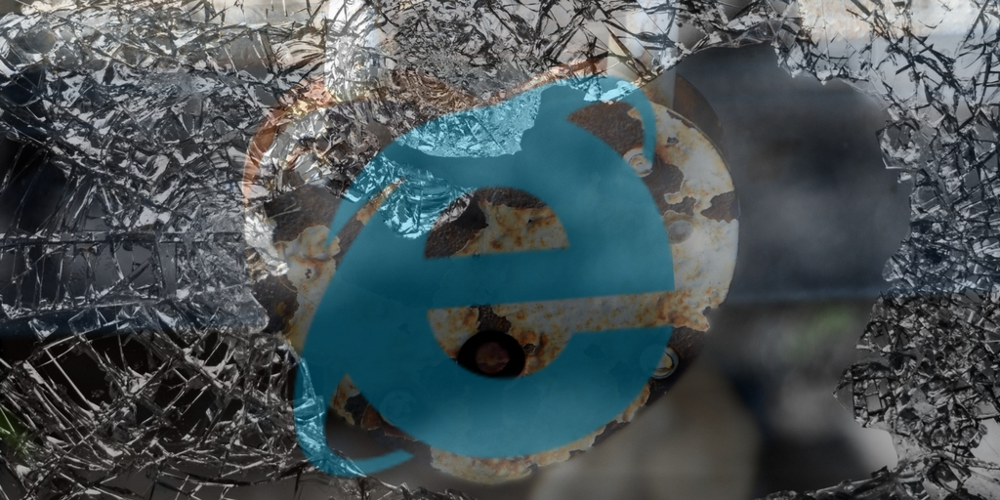

Promiseを使った処理をIE11で流そうとしたら怒られた

Barba.jsを使ったデモを作って、IEで動作確認したら……動かない。
エラーメッセージは以下の通り。
Possible Unhandled Promise Rejection: TypeError: 未定義または NULL 参照のプロパティ ‘isWebKit’ は取得できません
Unhandled Promise
というところが引っかかりますね。「IEさんもしかしてPromise使えないとか？」と思って検索。
- Reactアプリを IE11 で表示すると 「オブジェクトは 'startsWith' プロパティまたはメソッドをサポートしていません。」 が発生する – ＊いしのなかにいる＊
- Promiseのpolyfill(IE11お前もか!) – Qiita
- IEでPromiseを利用する – Qiita
案の定、ES6のPromiseは使えないと来ました。やっぱりか。「えーマジPromise使えないの！？」「Promise使えないのが許されるのはNetscapeまでだよねー」という感じです。
回避策としては次の通り。
- ブラウザ判定して逃げる(そもそもBarba.jsを動かさない)
- Polyfill
- Babel
PolyfillとBabelは似たような感じですが、BabelだけがPolyfillではないですし、BabelはBabelで有名すぎるので気分的に別枠にしたいところ。
結局数種類のPolyfillを試してダメで、本家Barba.jsのSampleに上がっているサイトもIEだけはそれっぽいアニメーションでお茶を濁したり、全く違う動作をしていたりしていて「あ、これは根本的にダメくさい」と悟ったので諦めました。IEさんは平気で約束をすっぽかしたりするズボラなブラウザということがよく分かりました。